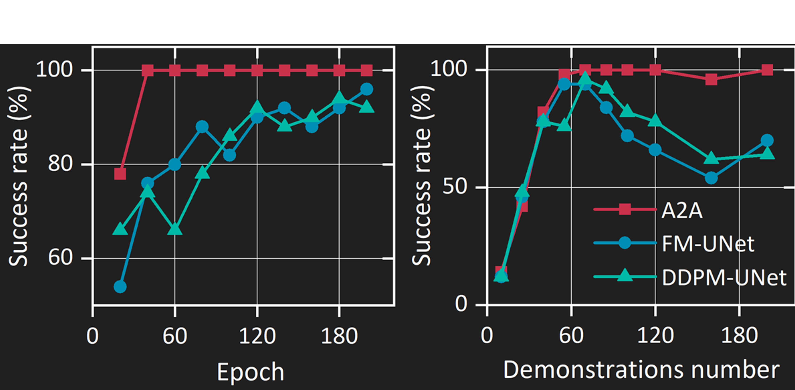
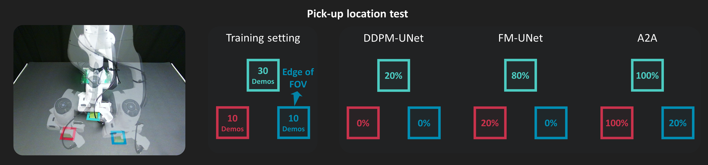
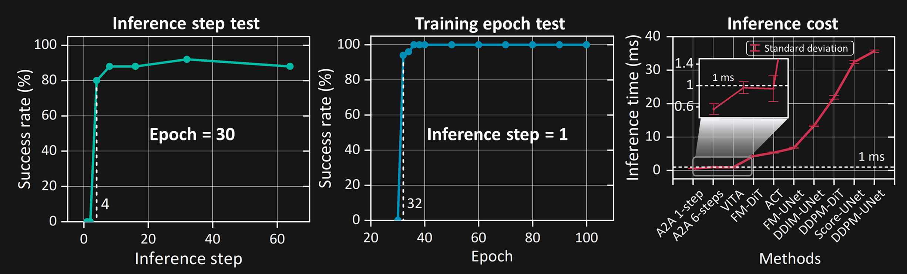
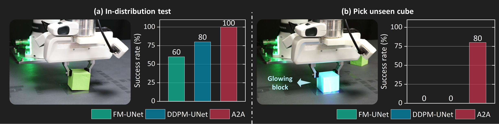

Abstract
Diffusion-based policies have recently achieved remarkable success in robotics by formulating action prediction as a conditional denoising process. However, the standard practice of sampling from random Gaussian noise often requires multiple iterative steps to produce clean actions, leading to high inference latency that incurs a major bottleneck for real-time control. In this paper, we challenge the necessity of uninformed noise sampling and propose Action-to-Action flow matching (A2A), a novel policy paradigm that shifts from random sampling to initialization informed by the previous action. Unlike existing methods that treat proprioceptive action feedback as static conditions, A2A leverages historical proprioceptive sequences, embedding them into a high-dimensional latent space as the starting point for action generation. This design bypasses costly iterative denoising while effectively capturing the robot's physical dynamics and temporal continuity. Extensive experiments demonstrate that A2A exhibits high training efficiency, fast inference speed, and improved generalization. Notably, A2A enables high-quality action generation in as few as a single inference step (0.56 ms latency), and exhibits superior robustness to visual perturbations and enhanced generalization to unseen configurations. Lastly, we also extend A2A to video generation, demonstrating its broader versatility in temporal modeling.
Key Insight: From Noise-to-Action to Action-to-Action
Traditional diffusion models were originally developed for high-fidelity image synthesis and video generation, where generation typically begins from uninformed noise due to the absence of meaningful priors. We observe that robots operate under a fundamentally different regime, that enable action-to-action feasible:
- Modern robotic systems have continuous proprioceptive feedback
- Adjacent action chunks exhibit inherent similarity due to physical consistency
- Historical actions can serve as a strong initialization signal for action generation

Ingredient 1: High Training Efficiency
A2A converges to high success quickly and keeps stable performance even with limited data.
- Fast convergence: Reaches a stable 100% success rate within 40 training epochs.
- High sample efficiency: Reaches and maintains a high performance ceiling as the number of demonstrations increases.

Quantitative Comparison
Success rates across 5 simulation tasks (100 demonstrations, 30 epochs)
| Methods | Steps | Close Box | Pick Cube | Stack Cube | Open Drawer | Pick-Place Bowl |
|---|---|---|---|---|---|---|
| A2A (Ours) | 6 | 92% | 92% | 86% | 92% | 90% |
| VITA | 6 | 88% | 88% | 80% | 90% | 92% |
| FM-UNet | 10 | 82% | 70% | 28% | 34% | 68% |
| FM-DiT | 10 | 58% | 88% | 26% | 28% | 84% |
| DDPM-UNet | 100 | 72% | 60% | 36% | 64% | 66% |
| DDPM-DiT | 100 | 58% | 58% | 16% | 14% | 68% |
| DDIM-UNet | 40 | 70% | 56% | 36% | 64% | 82% |
| Score-UNet | 100 | 36% | 36% | 12% | 0% | 4% |
| ACT | 1 | 82% | 86% | 32% | 80% | 60% |
Real-world test

Pick the cube from different locations with a limited 10 training demonstrations. A2A demonstrates rapid adaptation and high success rates, showcasing its superior data efficiency in novel scenarios.
Ingredient 2: Fast Inference Speed
A2A can run in single-step with sub-millisecond latency while keeping high performance.
- Rapid performance peak: Success rates saturate at just 4 inference steps.
- Single-step can still work well: When limited to one-step inference, success rises above 90% after 32 epochs.
- Latency: Mean inference latency ~1 ms, and 0.56 ms in the single-step regime (RTX 5090 benchmark).

Real-World Inference Comparison
Side-by-side comparison of different methods performing the same task in real-world settings. With 30 demonstrations, DDPM-UNet and FM-UNet achieves lower success rate and exhibit significant hesitation during the operation.
A2A (Ours)
DDPM-UNet
FM-UNet
Ingredient 3: Improved Generalization
A2A generalizes better than diffusion/flow baselines under heavy visual randomization and unseen Configuration.
Visual Generalization
We evaluate A2A under progressively challenging visual perturbations. Level 0 is the original training environment, while Levels 1-3 incrementally add new backgrounds, lighting conditions, and viewpoints.
Visual Generalization Results
Success rates under different levels of visual perturbation
| Methods | Steps | Level 0 | Level 1 | Level 2 | Level 3 |
|---|---|---|---|---|---|
| A2A (Ours) | 6 | 92% | 42% | 40% | 38% |
| A2A (Ours) | 1 | 90% | 36% | 34% | 32% |
| FM-UNet | 10 | 70% | 24% | 20% | 16% |
| DDPM-UNet | 100 | 60% | 18% | 14% | 10% |
Real-world test

(a) In-distribution evaluation: A2A achieves 100% success rate on the standard Pick Cube task with only 30 training trajectories. (b) Out-of-distribution stress test: When the target cube is replaced with an unseen glowing variant, baseline methods (FM-UNet, DDPM-UNet) completely fail (0% success), while A2A maintains robust performance with 80% success rate.
Pick Cube (In-Distribution)
Pick Cube (New Target)
Initial State Generalization
By injecting a small amount of Gaussian noise into the historical actions, A2A demonstrates strong generalization to diverse initial configurations. Even when objects are placed in unseen positions or orientations at the start of an episode, A2A successfully adapts and completes the task.
Configuration 1
Configuration 2
Configuration 3
BibTeX
@article{jia2026a2a,
title={Action-to-Action Flow Matching},
author={Jindou Jia and Gen Li and Xiangyu Chen and Tuo An and Yuxuan Hu and Jingliang Li and Xinying Guo and Jianfei Yang},
journal={arXiv preprint arXiv:2602.07322},
year={2026}
}